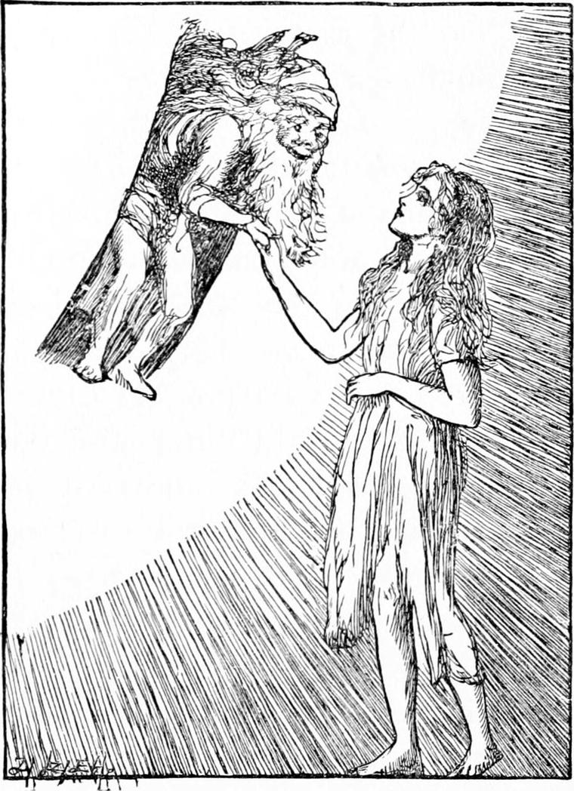
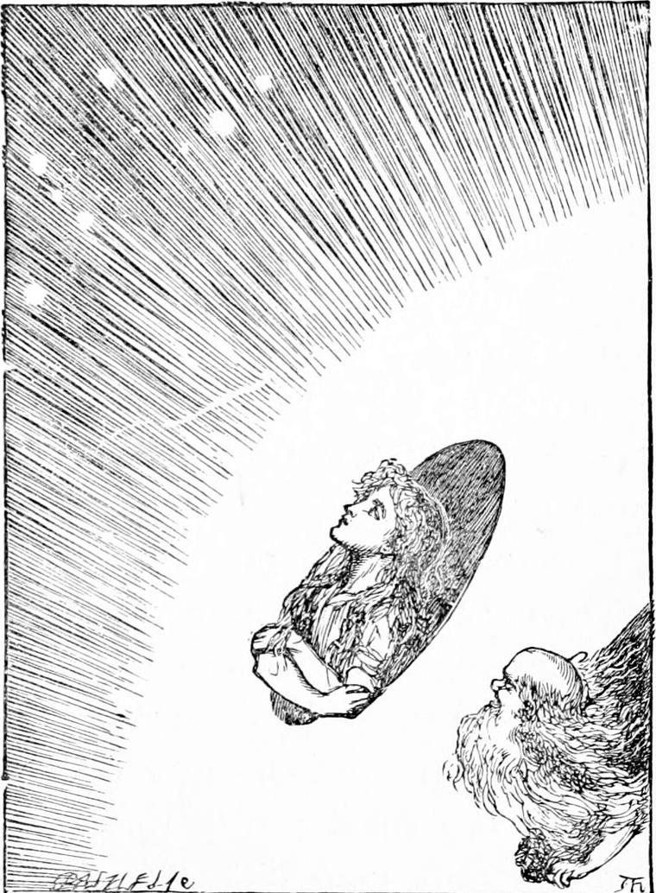

NANNY was not fit to be moved for some time yet, and Diamond went to see her as often as he could. But being more regularly engaged now, seeing he went out every day for a few hours with old Diamond, and had his baby to mind, and one of the horses to attend to, he could not go so often as he would have liked.
One evening, as he sat by her bedside, she said to him:
“I've had such a beautiful dream, Diamond! I should like to tell it you.”
“Oh! do,” said Diamond; “I am so fond of dreams!”
“She must have been to the back of the north wind,” he said to himself.
“It was a very foolish dream, you know. But somehow it was so pleasant! What a good thing it is that you believe the dream all the time you are in it!”
My readers must not suppose that poor Nanny was able to say what she meant so well as I put it down here. She had never been to school, and had heard very little else than vulgar speech until she came to the hospital. But I have been to school, and although that could never make me able to dream so well as Nanny, it has made me able to tell her dream better than she could herself. And I am the more desirous of doing this for her that I have already done the best I could for Diamond's dream, and it would be a shame to give the boy all the advantage.
“I will tell you all I know about it,” said Nanny. “The day before yesterday, a lady came to see us—a very beautiful lady, and very beautifully dressed. I heard the matron say to her that it was very kind of her to come in blue and gold; and she answered that she knew we didn't like dull colours. She had such a lovely shawl on, just like redness dipped in milk, and all worked over with flowers of the same colour. It didn't shine much, it was silk, but it kept in the shine. When she came to my bedside, she sat down, just where you are sitting, Diamond, and laid her hand on the counterpane. I was sitting up, with my table before me ready for my tea. Her hand looked so pretty in its blue glove, that I was tempted to stroke it. I thought she wouldn't be angry, for everybody that comes to the hospital is kind. It's only in the streets they ain't kind. But she drew her hand away, and I almost cried, for I thought I had been rude. Instead of that, however, it was only that she didn't like giving me her glove to stroke, for she drew it off, and then laid her hand where it was before. I wasn't sure, but I ventured to put out my ugly hand.”
“Your hand ain't ugly, Nanny,” said Diamond; but Nanny went on—
“And I stroked it again, and then she stroked mine,—think of that! And there was a ring on her finger, and I looked down to see what it was like. And she drew it off, and put it upon one of my fingers. It was a red stone, and she told me they called it a ruby.”
“Oh, that is funny!” said Diamond. “Our new horse is called Ruby. We've got another horse—a red one—such a beauty!”
But Nanny went on with her story.
“I looked at the ruby all the time the lady was talking to me,—it was so beautiful! And as she talked I kept seeing deeper and deeper into the stone. At last she rose to go away, and I began to pull the ring off my finger; and what do you think she said?—'Wear it all night, if you like. Only you must take care of it. I can't give it you, for some one gave it to me; but you may keep it till to-morrow.' Wasn't it kind of her? I could hardly take my tea, I was so delighted to hear it; and I do think it was the ring that set me dreaming; for, after I had taken my tea, I leaned back, half lying and half sitting, and looked at the ring on my finger. By degrees I began to dream. The ring grew larger and larger, until at last I found that I was not looking at a red stone, but at a red sunset, which shone in at the end of a long street near where Grannie lives. I was dressed in rags as I used to be, and I had great holes in my shoes, at which the nasty mud came through to my feet. I didn't use to mind it before, but now I thought it horrid. And there was the great red sunset, with streaks of green and gold between, standing looking at me. Why couldn't I live in the sunset instead of in that dirt? Why was it so far away always? Why did it never come into our wretched street? It faded away, as the sunsets always do, and at last went out altogether. Then a cold wind began to blow, and flutter all my rags about——”
“That was North Wind herself,” said Diamond.
“Eh?” said Nanny, and went on with her story.
“I turned my back to it, and wandered away. I did not know where I was going, only it was warmer to go that way. I don't think it was a north wind, for I found myself in the west end at last. But it doesn't matter in a dream which wind it was.”
“I don't know that,” said Diamond. “I believe North Wind can get into our dreams—yes, and blow in them. Sometimes she has blown me out of a dream altogether.”
“I don't know what you mean, Diamond,” said Nanny.
“Never mind,” answered Diamond. “Two people can't always understand each other. They'd both be at the back of the north wind directly, and what would become of the other places without them?”
“You do talk so oddly!” said Nanny. “I sometimes think they must have been right about you.”
“What did they say about me?” asked Diamond.
“They called you God's baby.”
“How kind of them! But I knew that.”
“Did you know what it meant, though? It meant that you were not right in the head.”
“I feel all right,” said Diamond, putting both hands to his head, as if it had been a globe he could take off and set on again.
“Well, as long as you are pleased I am pleased,” said Nanny.
“Thank you, Nanny. Do go on with your story. I think I like dreams even better than fairy tales. But they must be nice ones, like yours, you know.”
“Well, I went on, keeping my back to the wind, until I came to a fine street on the top of a hill. How it happened I don't know, but the front door of one of the houses was open, and not only the front door, but the back door as well, so that I could see right through the house—and what do you think I saw? A garden place with green grass, and the moon shining upon it! Think of that! There was no moon in the street, but through the house there was the moon. I looked and there was nobody near: I would not do any harm, and the grass was so much nicer than the mud! But I couldn't think of going on the grass with such dirty shoes: I kicked them off in the gutter, and ran in on my bare feet, up the steps, and through the house, and on to the grass; and the moment I came into the moonlight, I began to feel better.”
“That's why North Wind blew you there,” said Diamond.
“It came of Mr. Raymond's story about Princess Daylight,” returned Nanny. “Well, I lay down upon the grass in the moonlight without thinking how I was to get out again. Somehow the moon suited me exactly. There was not a breath of the north wind you talk about; it was quite gone.”
“You didn't want her any more, just then. She never goes where she's not wanted,” said Diamond. “But she blew you into the moonlight, anyhow.”
“Well, we won't dispute about it,” said Nanny: “you've got a tile loose, you know.”
“Suppose I have,” returned Diamond, “don't you see it may let in the moonlight, or the sunlight for that matter?”
“Perhaps yes, perhaps no,” said Nanny.
“And you've got your dreams, too, Nanny.”
“Yes, but I know they're dreams.”
“So do I. But I know besides they are something more as well.”
“Oh! do you?” rejoined Nanny. “I don't.”
“All right,” said Diamond. “Perhaps you will some day.”
“Perhaps I won't,” said Nanny.
Diamond held his peace, and Nanny resumed her story.
“I lay a long time, and the moonlight got in at every tear in my clothes, and made me feel so happy——”
“There, I tell you!” said Diamond.
“What do you tell me?” returned Nanny.
“North Wind——”
“It was the moonlight, I tell you,” persisted Nanny, and again Diamond held his peace.
“All at once I felt that the moon was not shining so strong. I looked up, and there was a cloud, all crapey and fluffy, trying to drown the beautiful creature. But the moon was so round, just like a whole plate, that the cloud couldn't stick to her. She shook it off, and said there and shone out clearer and brighter than ever. But up came a thicker cloud,—and 'You shan't,' said the moon; and 'I will,' said the cloud,—but it couldn't: out shone the moon, quite laughing at its impudence. I knew her ways, for I've always been used to watch her. She's the only thing worth looking at in our street at night.”
“Don't call it your street,” said Diamond. “You're not going back to it. You're coming to us, you know.”
“That's too good to be true,” said Nanny.
“There are very few things good enough to be true,” said Diamond; “but I hope this is. Too good to be true it can't be. Isn't true good? and isn't good good? And how, then, can anything be too good to be true? That's like old Sal—to say that.”
“Don't abuse Grannie, Diamond. She's a horrid old thing, she and her gin bottle; but she'll repent some day, and then you'll be glad not to have said anything against her.”
“Why?” said Diamond.
“Because you'll be sorry for her.”
“I am sorry for her now.”
“Very well. That's right. She'll be sorry too. And there'll be an end of it.”
“All right. You come to us,” said Diamond.
“Where was I?” said Nanny.
“Telling me how the moon served the clouds.”
“Yes. But it wouldn't do, all of it. Up came the clouds and the clouds, and they came faster and faster, until the moon was covered up. You couldn't expect her to throw off a hundred of them at once—could you?”
“Certainly not,” said Diamond.
“So it grew very dark; and a dog began to yelp in the house. I looked and saw that the door to the garden was shut. Presently it was opened—not to let me out, but to let the dog in—yelping and bounding. I thought if he caught sight of me, I was in for a biting first, and the police after. So I jumped up, and ran for a little summer-house in the corner of the garden. The dog came after me, but I shut the door in his face. It was well it had a door—wasn't it?”
“You dreamed of the door because you wanted it,” said Diamond.
“No, I didn't; it came of itself. It was there, in the true dream.”
“There—I've caught you!” said Diamond. “I knew you believed in the dream as much as I do.”
“Oh, well, if you will lay traps for a body!” said Nanny. “Anyhow, I was safe inside the summer-house. And what do you think?—There was the moon beginning to shine again—but only through one of the panes—and that one was just the colour of the ruby. Wasn't it funny?”
“No, not a bit funny,” said Diamond.
“If you will be contrary!” said Nanny.
“No, no,” said Diamond; “I only meant that was the very pane I should have expected her to shine through.”
“Oh, very well!” returned Nanny.
What Diamond meant, I do not pretend to say. He had curious notions about things.

“And now,” said Nanny, “I didn't know what to do, for the dog kept barking at the door, and I couldn't get out. But the moon was so beautiful that I couldn't keep from looking at it through the red pane. And as I looked it got larger and larger till it filled the whole pane and outgrew it, so that I could see it through the other panes; and it grew till it filled them too and the whole window, so that the summer-house was nearly as bright as day.
“The dog stopped barking, and I heard a gentle tapping at the door, like the wind blowing a little branch against it.”
“Just like her,” said Diamond, who thought everything strange and beautiful must be done by North Wind.
“So I turned from the window and opened the door; and what do you think I saw?”
“A beautiful lady,” said Diamond.
“No—the moon itself, as big as a little house, and as round as a ball, shining like yellow silver. It stood on the grass—down on the very grass: I could see nothing else for the brightness of it: And as I stared and wondered, a door opened in the side of it, near the ground, and a curious little old man, with a crooked thing over his shoulder, looked out, and said: 'Come along, Nanny; my lady wants you. We're come to fetch you.” I wasn't a bit frightened. I went up to the beautiful bright thing, and the old man held down his hand, and I took hold of it, and gave a jump, and he gave me a lift, and I was inside the moon. And what do you think it was like? It was such a pretty little house, with blue windows and white curtains! At one of the windows sat a beautiful lady, with her head leaning on her hand, looking out. She seemed rather sad, and I was sorry for her, and stood staring at her.
“`You didn't think I had such a beautiful mistress as that!' said the queer little man. `No, indeed!' I answered: `who would have thought it?' `Ah! who indeed? But you see you don't know everything.' The little man closed the door, and began to pull at a rope which hung behind it with a weight at the end. After he had pulled a while, he said—`There, that will do; we're all right now.' Then he took me by the hand and opened a little trap in the floor, and led me down two or three steps, and I saw like a great hole below me. `Don't be frightened,' said the tittle man. `It's not a hole. It's only a window. Put your face down and look through.' I did as he told me, and there was the garden and the summer-house, far away, lying at the bottom of the moonlight. `There!' said the little man; `we've brought you off! Do you see the little dog barking at us down there in the garden?' I told him I couldn't see anything so far. `Can you see anything so small and so far off?' I said. `Bless you, child!' said the little man; `I could pick up a needle out of the grass if I had only a long enough arm. There's one lying by the door of the summer-house now.' I looked at his eyes. They were very small, but so bright that I think he saw by the light that went out of them. Then he took me up, and up again by a little stair in a corner of the room, and through another trapdoor, and there was one great round window above us, and I saw the blue sky and the clouds, and such lots of stars, all so big and shining as hard as ever they could!”

“The little girl-angels had been polishing them,” said Diamond.
“What nonsense you do talk!” said Nanny.
“But my nonsense is just as good as yours, Nanny. When you have done, I'll tell you my dream. The stars are in it—not the moon, though. She was away somewhere. Perhaps she was gone to fetch you then. I don't think that, though, for my dream was longer ago than yours. She might have been to fetch some one else, though; for we can't fancy it's only us that get such fine things done for them. But do tell me what came next.”
Perhaps one of my child-readers may remember whether the moon came down to fetch him or her the same night that Diamond had his dream. I cannot tell, of course. I know she did not come to fetch me, though I did think I could make her follow me when I was a boy—not a very tiny one either.
“The little man took me all round the house, and made me look out of every window. Oh, it was beautiful! There we were, all up in the air, in such a nice, clean little house! `Your work will be to keep the windows bright,' said the little man. `You won't find it very difficult, for there ain't much dust up here. Only, the frost settles on them sometimes, and the drops of rain leave marks on them.' `I can easily clean them inside,' I said; `but how am I to get the frost and rain off the outside of them?' `Oh!' he said, `it's quite easy. There are ladders all about. You've only got to go out at the door, and climb about. There are a great many windows you haven't seen yet, and some of them look into places you don't know anything about. I used to clean them myself, but I'm getting rather old, you see. Ain't I now?' `I can't tell,' I answered. `You see I never saw you when you were younger.' `Never saw the man in the moon?' said he. `Not very near,' I answered, `not to tell how young or how old he looked. I have seen the bundle of sticks on his back.' For Jim had pointed that out to me. Jim was very fond of looking at the man in the moon. Poor Jim! I wonder he hasn't been to see me. I'm afraid he's ill too.”
“I'll try to find out,” said Diamond, “and let you know.”
“Thank you,” said Nanny. “You and Jim ought to be friends.”
“But what did the man in the moon say, when you told him you had seen him with the bundle of sticks on his back?”
“He laughed. But I thought he looked offended too. His little nose turned up sharper, and he drew the corners of his mouth down from the tips of his ears into his neck. But he didn't look cross, you know.”
“Didn't he say anything?”
“Oh, yes! He said: `That's all nonsense. What you saw was my bundle of dusters. I was going to clean the windows. It takes a good many, you know. Really, what they do say of their superiors down there!' `It's only because they don't know better,' I ventured to say. `Of course, of course,' said the little man. `Nobody ever does know better. Well, I forgive them, and that sets it all right, I hope.' `It's very good of you,' I said. `No!' said he, `it's not in the least good of me. I couldn't be comfortable otherwise.' After this he said nothing for a while, and I laid myself on the floor of his garret, and stared up and around at the great blue beautifulness. I had forgotten him almost, when at last he said: `Ain't you done yet?' `Done what?' I asked. `Done saying your prayers,' says he. 'I wasn't saying my prayers,' I answered. `Oh, yes, you were,' said he, `though you didn't know it! And now I must show you something else.'
“He took my hand and led me down the stair again, and through a narrow passage, and through another, and another, and another. I don't know how there could be room for so many passages in such a little house. The heart of it must be ever so much farther from the sides than they are from each other. How could it have an inside that was so independent of its outside? There's the point. It was funny—wasn't it, Diamond?”
“No,” said Diamond. He was going to say that that was very much the sort of thing at the back of the north wind; but he checked himself and only added, “All right. I don't see it. I don't see why the inside should depend on the outside. It ain't so with the crabs. They creep out of their outsides and make new ones. Mr. Raymond told me so.”
“I don't see what that has got to do with it,” said Nanny.
“Then go on with your story, please,” said Diamond. “What did you come to, after going through all those winding passages into the heart of the moon?”
“I didn't say they were winding passages. I said they were long and narrow. They didn't wind. They went by corners.”
“That's worth knowing,” remarked Diamond. “For who knows how soon he may have to go there? But the main thing is, what did you come to at last?”
“We came to a small box against the wall of a tiny room. The little man told me to put my ear against it. I did so, and heard a noise something like the purring of a cat, only not so loud, and much sweeter. `What is it?' I asked. `Don't you know the sound?' returned the little man. `No,' I answered. `Don't you know the sound of bees?' he said. I had never heard bees, and could not know the sound of them. `Those are my lady's bees,' he went on. I had heard that bees gather honey from the flowers. `But where are the flowers for them?' I asked. `My lady's bees gather their honey from the sun and the stars,' said the little man. `Do let me see them,' I said. `No. I daren't do that,' he answered. `I have no business with them. I don't understand them. Besides, they are so bright that if one were to fly into your eye, it would blind you altogether.' `Then you have seen them?' `Oh, yes! Once or twice, I think. But I don't quite know: they are so very bright—like buttons of lightning. Now I've showed you all I can to-night, and we'll go back to the room.' I followed him, and he made me sit down under a lamp that hung from the roof, and gave me some bread and honey.
“The lady had never moved. She sat with her forehead leaning on her hand, gazing out of the little window, hung like the rest with white cloudy curtains. From where I was sitting I looked out of it too, but I could see nothing. Her face was very beautiful, and very white, and very still, and her hand was as white as the forehead that leaned on it. I did not see her whole face—only the side of it, for she never moved to turn it full upon me, or even to look at me.
“How long I sat after I had eaten my bread and honey, I don't know. The little man was busy about the room, pulling a string here, and a string there, but chiefly the string at the back of the door. I was thinking with some uneasiness that he would soon be wanting me to go out and clean the windows, and I didn't fancy the job. At last he came up to me with a great armful of dusters. `It's time you set about the windows,' he said; `for there's rain coming, and if they're quite clean before, then the rain can't spoil them.' I got up at once. `You needn't be afraid,' he said. `You won't tumble off. Only you must be careful. Always hold on with one hand while you rub with the other.' As he spoke, he opened the door. I started back in a terrible fright, for there was nothing but blue air to be seen under me, like a great water without a bottom at all. But what must be must, and to live up here was so much nicer than down in the mud with holes in my shoes, that I never thought of not doing as I was told. The little man showed me how and where to lay hold while I put my foot round the edge of the door on to the first round of a ladder. `Once you're up,' he said, `you'll see how you have to go well enough.' I did as he told me, and crept out very carefully. Then the little man handed me the bundle of dusters, saying, `I always carry them on my reaping hook, but I don't think you could manage it properly. You shall have it if you like.' I wouldn't take it, however, for it looked dangerous.
“I did the best I could with the dusters, and crawled up to the top of the moon. But what a grand sight it was! The stars were all over my head, so bright and so near that I could almost have laid hold of them. The round ball to which I clung went bobbing and floating away through the dark blue above and below and on every side. It was so beautiful that all fear left me, and I set to work diligently. I cleaned window after window. At length I came to a very little one, in at which I peeped. There was the room with the box of bees in it! I laid my ear to the window, and heard the musical hum quite distinctly. A great longing to see them came upon me, and I opened the window and crept in. The little box had a door like a closet. I opened it—the tiniest crack—when out came the light with such a sting that I closed it again in terror—not, however, before three bees had shot out into the room, where they darted about like flashes of lightning. Terribly frightened, I tried to get out of the window again, but I could not: there was no way to the outside of the moon but through the door; and that was in the room where the lady sat. No sooner had I reached the room, than the three bees, which had followed me, flew at once to the lady, and settled upon her hair. Then first I saw her move. She started, put up her hand, and caught them; then rose and, having held them into the flame of the lamp one after the other, turned to me. Her face was not so sad now as stern. It frightened me much. `Nanny, you have got me into trouble,' she said. `You have been letting out my bees, which it is all I can do to manage. You have forced me to burn them. It is a great loss, and there will be a storm.' As she spoke, the clouds had gathered all about us. I could see them come crowding up white about the windows. `I am sorry to find,' said the lady, `that you are not to be trusted. You must go home again—you won't do for us.' Then came a great clap of thunder, and the moon rocked and swayed. All grew dark about me, and I fell on the floor and lay half-stunned. I could hear everything but could see nothing. `Shall I throw her out of the door, my lady?' said the little man. `No,' she answered; `she's not quite bad enough for that. I don't think there's much harm in her; only she'll never do for us. She would make dreadful mischief up here. She's only fit for the mud. It's a great pity. I am sorry for her. Just take that ring off her finger. I am sadly afraid she has stolen it.' The little man caught hold of my hand, and I felt him tugging at the ring. I tried to speak what was true about it, but, after a terrible effort, only gave a groan. Other things began to come into my head. Somebody else had a hold of me. The little man wasn't there. I opened my eyes at last, and saw the nurse. I had cried out in my sleep, and she had come and waked me. But, Diamond, for all it was only a dream, I cannot help being ashamed of myself yet for opening the lady's box of bees.”
“You wouldn't do it again—would you—if she were to take you back?” said Diamond.
“No. I don't think anything would ever make me do it again. But where's the good? I shall never have the chance.”
“I don't know that,” said Diamond.
“You silly baby! It was only a dream,” said Nanny.
“I know that, Nanny, dear. But how can you tell you mayn't dream it again?”
“That's not a bit likely.”
“I don't know that,” said Diamond.
“You're always saying that,” said Nanny. “I don't like it.”
“Then I won't say it again—if I don't forget.” said Diamond. “But it was such a beautiful dream!—wasn't it, Nanny? What a pity you opened that door and let the bees out! You might have had such a long dream, and such nice talks with the moon-lady. Do try to go again, Nanny. I do so want to hear more.”
But now the nurse came and told him it was time to go; and Diamond went, saying to himself, “I can't help thinking that North Wind had something to do with that dream. It would be tiresome to lie there all day and all night too—without dreaming. Perhaps if she hadn't done that, the moon might have carried her to the back of the north wind—who knows?”